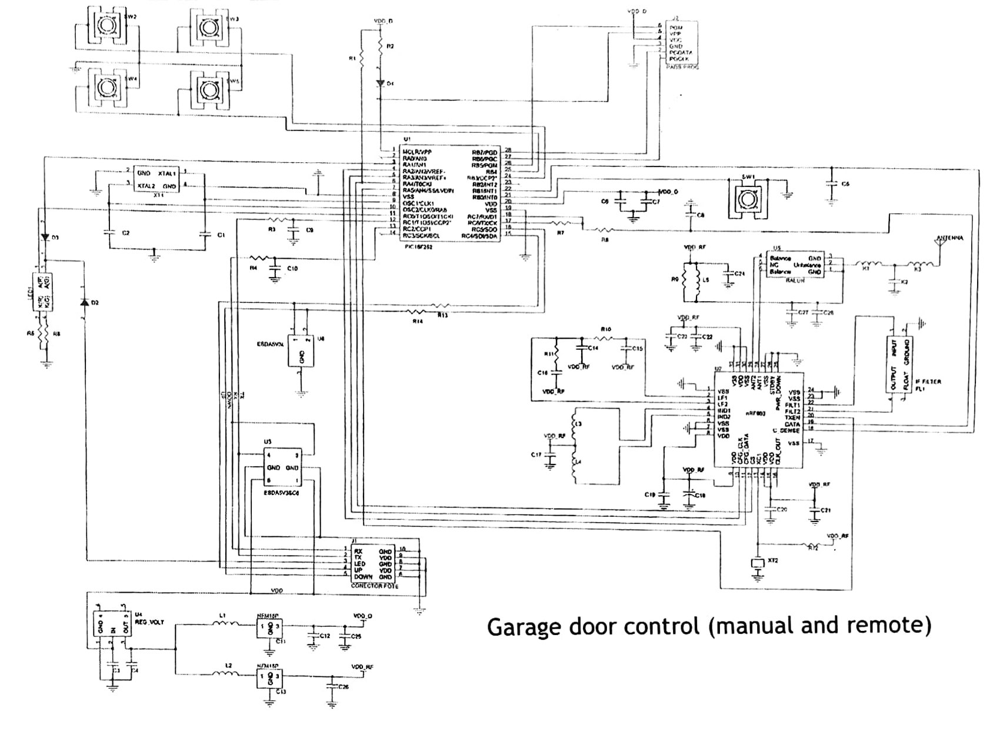

Condensadores
Existen condensadores de todas las formas y tamaños. Son dispositivos capaces de almacenar energía en forma de campo eléctrico y que se oponen a los cambios bruscos de voltaje liberando su energía almacenada rápidamente. Están formados por dos armaduras metálicas paralelas separadas por un material dieléctrico que evita que la corriente circule directamente entre ellas.

Además según la función que cumplan y siempre que estén conectados entre la fuente de tensión y tierra se pueden clasificar en 3 grupos principales: Bypass, Bulk y Decouple.
Condensadores Bypass
Estos condensadores se encargan de filtrar el posible ruido producido por la fuente de alimentación y por esto serán los más cercanos a esta.
Condensadores Bulk
Estos se colocan después de los condensadores de bypass, proporcionando los armónicos más bajos de los picos de corriente para suministrar un voltaje y corriente estables a los componentes. Su voltaje nominal debería ser el doble que el voltaje máximo esperado en el circuito y su capacidad suele estar típicamente entre los 10 y 100 µF.
Condensadores Decouple
Son los condensadores más cercanos a los componentes y se encargan de estabilizar el voltaje proporcionando los armónicos más altos de los picos de corriente.